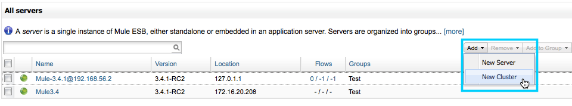
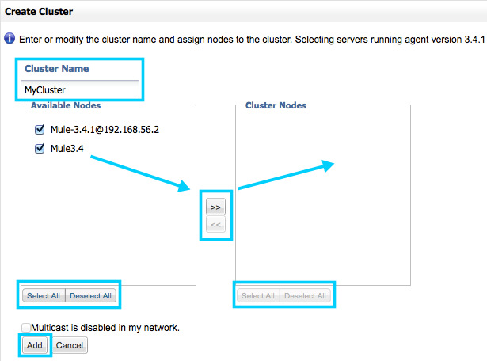
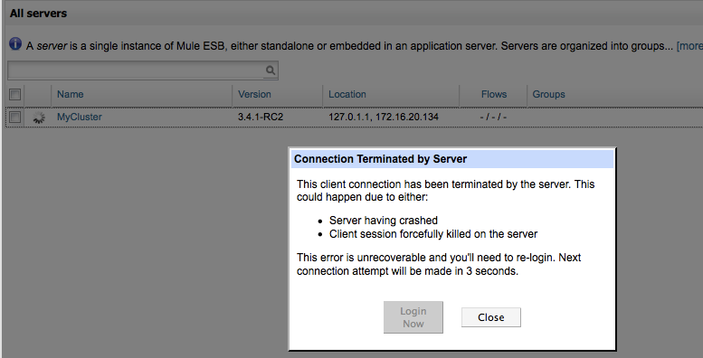
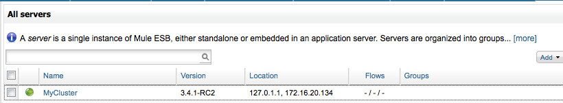
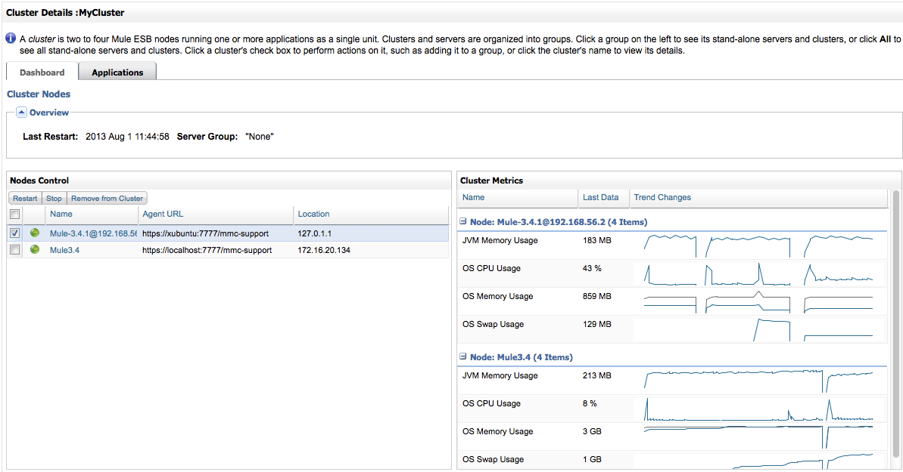
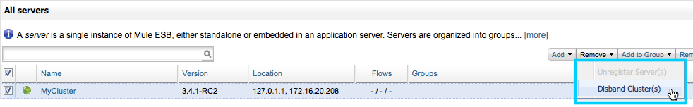

Creating or Disbanding a Cluster
You can use the Management Console to create one or more clusters. A cluster may contain from one to eight nodes. You can also use the Management Console to disband a cluster.
| When you create a cluster, all the nodes that you select for the cluster must implement the same agent version and the same Mule ESB version. If you need to upgrade a server so that it matches the Mule ESB version of the other cluster nodes, first unregister the server, then upgrade it to the required version of Mule. Then you can create the cluster with the upgraded server (and the other servers) as nodes. |
| You can also create and disband clusters programmatically using the Management Console REST API. |
Creating a Cluster
Follow these steps to create a cluster:
-
Register the servers that you want to place in a cluster, if these servers are not already registered with the console.
-
Bring up the All servers pane. To do so, click the Servers tab, and if necessary, click All in the left-hand navigation pane. Clicking All displays the servers registered in all groups. You may need to click All if you’re currently viewing the servers registered in a specific group such as Development or Test.
-
From the All servers pane, click the Add drowp-down menu (upper-right toolbar), then select New Cluster from the menu options.
 -
The Management Console displays the Create Cluster pane. Enter a name for the cluster in the Cluster Name box. Then, select and add the desired nodes to the cluster (you can add from one to eight nodes). Use the right arrow to add selected nodes from the Available Nodes list to the Cluster Nodes list. (Use the left arrow to remove nodes from the cluster.) Use the Select All/Deselect All buttons in the Available Nodes and Cluster Nodes lists to select or unselect all items in the respective lists. When finished, click the Add button in the lower left corner to complete the operation, or click Cancel to cancel the cluster creation.
Optional: Configure a Cluster without Multicast
(Management Console v.3.4.1 and above)
The Management Console uses multicast for cluster creation. Before creating a cluster, ensure that multicast is enabled in your network. If it is not, or if you do not want to use multicast to create the cluster, click the checkbox next to Multicast is disabled in my network. This will cause the Management console to configure each node with the fixed IP address that you supplied when registering the Mule ESB server that resides on the node.
-
After you’ve created the cluster, the console displays the All servers pane. During the cluster creation process the pane marks the new cluster with an "in-progress" icon. When creating a cluster, the connection to the Management Console may be reset, in which case you will need to re-login to the Management Console.

Although this is not explicitly visible to the user, when the Management Console creates a cluster, it sends tickets to all the cluster nodes and restarts them. The in-progress indicator indicates that the console is waiting for the nodes to restart. Once the cluster nodes restart, the cluster is ready for use. You can see the new cluster in the All servers pane, as shown below.

Notice that the All servers pane does not list the individual nodes in a cluster. Instead, it lists the cluster as a single unit. In the example above, the cluster MyCluster contains two nodes, which are not shown. To see the nodes that belong to a cluster, click the name of the cluster, in this case MyCluster. The Management Console will display the Cluster Details screen, shown below.

The Cluster Metrics pane (above, right) displays operating details for each node in the cluster. The Nodes Control pane (above, left) allows you to view details for each node, or to operate on each node.
To view details for a node, click the node name. To operate on a node, select it by clicking the checkbox to the left. (In the image above, the first cluster in the list, Mule-3.4.1@192.168.56.2, is selected.) Selecting a cluster enables the Restart, Stop, and Remove from Cluster buttons, allowing you to perform these operations on the selected node.
| Any alerts that are defined on a server are removed when the server is added as a node to a cluster. You can however, create a Server Down or Server Up alert on the cluster node. An alert is raised when the cluster node is down or up, respectively. |
Disbanding a Cluster
You disband a cluster from the All Servers pane. To disband a cluster, follow these steps:
-
Go to the All Servers pane (click the Servers tab, then All).
-
Select one or more clusters in the cluster list.
-
Click Remove.
-
Select Disband Cluster(s) from the Remove drop-down menu.
Disbanding a cluster undeploys any applications that were deployed to the cluster. The nodes that comprise the cluster become standalone servers.
Creating a Cluster Manually
When you use the Management Console to add a node to a cluster, the console sends a ticket to the node and restarts it (it also does this for any other nodes already in the cluster). The ticket is stored on the node, in the file $MULE_HOME/.mule/mule-cluster.properties.
If you wish to manually add a Mule instance to a cluster, you can do so by creating the same ticket file that the Management Console creates for the node, and then restarting the node.
The ticket file stores information as key=value pairs. For a list of the parameters allowed in this file, see Creating and Managing a Cluster Manually.
|
Do not attempt mixed management of clusters If you create a cluster manually, do not attempt to manage it via the Management Console. The Management Console will not recognize your manually-created cluster, and will overwrite your cluster configuration. |
See Also
-
Read more about Configuring Cluster Nodes manually.
-
Learn about deploying and monitoring clusters.